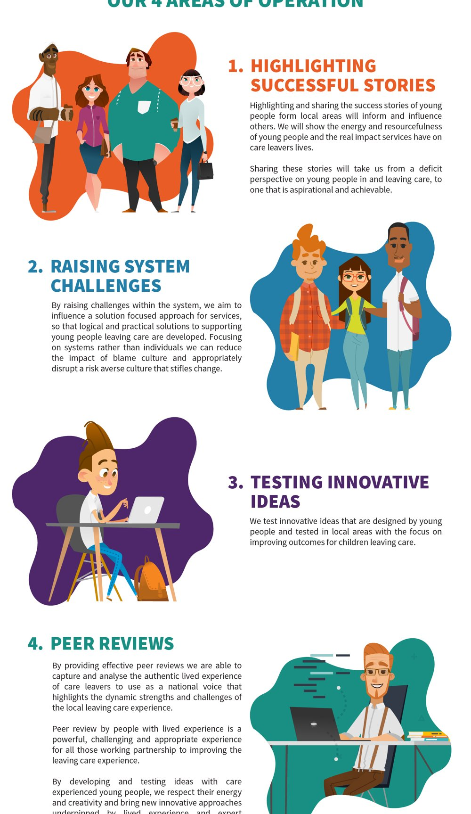

The National House Project: the Care Leavers National Movement, a national voice for young people leaving care
The National House Project helps young people leaving care into their first home. When it became a national charity, it wanted young people leaving care to guide it. We trained 12 care-experienced young people from six local authorities in leadership and social entrepreneurship, and they formed the Care Leavers National Movement.


The starting point
The House Project helps young people leaving care move into their first home. Young people join in groups of around 10, renovate a property together and move in as tenants, with the group as their support network. We worked on it from the start: youth engagement in the Stoke-on-Trent pilot, then consultancy on rolling it out nationally as members of the project board. When it became a national charity, The National House Project asked us to set up a group of young people to guide it, give feedback to the chief executive and trustees, and represent young people across the project.
What we did
- PilotYouth engagementActivities, events and feedback from young people in the Stoke-on-Trent pilot, alongside the local participation team
- National roll-outProject boardFound councils willing to run the House Project and helped them set it up
- The charityA steering groupAsked to set up a group of young people to guide the new charity
- Leadership12 young peopleA programme in social entrepreneurship: co-design, project development, public speaking, networking and storytelling
- The movementLaunchYoung people from six councils formed the Care Leavers National Movement
How the movement works
The young people set four areas of operation for the movement:
- Highlight success stories, to move the picture of young people leaving care from deficit to aspiration
- Raise challenges in the systems that support young people leaving care, focusing on systems rather than individuals
- Test ideas designed by young people in local House Projects
- Run youth-led peer reviews of each local House Project
Services across the House Project network could also request a consultation. The movement looked at each request at its next meeting and sorted it: answer now, schedule it, ask for more information, or decline politely with a reason.
Peer reviews
The movement was tasked with a yearly peer review of each local House Project, run by care-experienced young people trained to do it. Each review was designed to look at how well young people were supported towards the House Project’s ORCHIDS outcomes: ownership, responsibility, community, homes, independence, direction and a sense of wellbeing. It would give direct feedback on young people’s experience, the good practice the reviewers saw, and ways to develop.
Why it matters
The movement gave a national charity a standing group of young people leaving care to guide it, with a clear remit and real work to do. Their lived experience sat alongside the professional knowledge of the House Project team and the councils running it. It is the approach behind our participation work: train young people in leadership first, then give them a real role.

See the work
